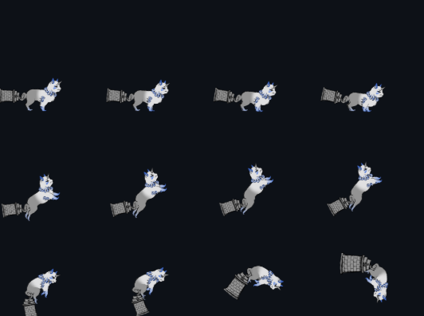

概要
「祓魔犬」は、専門学校2年の進級制作としてチームで開発した、和風2D横スクロールアクションゲームです。
石化が不完全な状態で解け、巨大な台座が尻尾のように残ってしまった狛犬と獅子が、その台座を武器として活かし、襲い来る妖怪たちを退治しながら進みます。
DirectX11をベースとした自作のゲームエンジン・フレームワークを採用し、滑らかな2Dアクションや躍動感のあるエフェクト描画にこだわって制作しました。
使用技術
使用言語: C++ (ゲームロジック、描画制御), HLSL (エフェクト・描画用シェーダー)
グラフィックAPI: DirectX11
ツール: Git / GitHub (バージョン管理・進行管理)
主な役割
プログラマーの進行管理
私はGitHubリポジトリの管理に加え、開発進行の管理（進捗マネジメント）や、遅延・技術的課題が発生した際のサポートを担当しました。
プランナーやデザイナーとの連携窓口となり、設計仕様やゲーム素材の実装タスクをプログラマーメンバーへ適切にアサイン。提出されたプルリクエストのコードレビューや成果物チェックを行い、品質維持とスムーズなマージに努めました。
業種間コミュニケーションのサポート
本作はカリキュラム上、初の共同開発プロジェクトだったため、チームメンバーのほとんどがチーム制作未経験でした。
そのため、専攻の違いによる専門知識のギャップや仕様に対する認識のズレが生じやすく、私はその間に入ってすり合わせを行うなど、チーム全体のコミュニケーションを円滑にするサポート役を担いました。
特徴
DirectX11を使用した完全C++コード
HLSL（シェーダー）を除くすべてのプログラムを、外部エンジンに頼らずC++とDirectX11を用いて一から記述しました。プログラマー陣がそれまでに学んだゲームプログラミング技術の集大成となる作品です。
多数のスプライトアニメーションの実装
キャラクターの呼吸などの待機モーションから派手な攻撃エフェクトまで、デザイナーから提供された多様なスプライトアニメーションを滑らかに再生するシステムを構築しました。
また、キャラクターが動き回るステージマップについても、プランナーが作成したCSVデータのタイルマップ情報を読み込み、動的に生成・配置する仕組みを実装しました。

各種ゲームシステム紹介
尻尾の台座を活かした攻撃
石化が解けた際に不完全で残ってしまった巨大な石の台座を、棍棒（こんぼう）のように豪快に振り回して敵をなぎ倒します。
また、本来の神使としての能力を用いて、地面から岩柱を突き出させて攻撃することも可能です。

移動・ジャンプ・攻撃といった一連のアクションにおけるアニメーション遷移を緻密に制御し、操作していて心地よい「手触り感」を追求しました。
狛犬と獅子の固有の能力
同時に石化から目覚めた狛犬と獅子には、それぞれ異なる固有の能力（アクション）が備わっています。
これらを状況に応じて切り替えて使い分けることで、ステージ内の様々なギミックを解き明かして進んでいきます。さらに、2匹が連携することで発動する、強力な合体技なども実装しました。